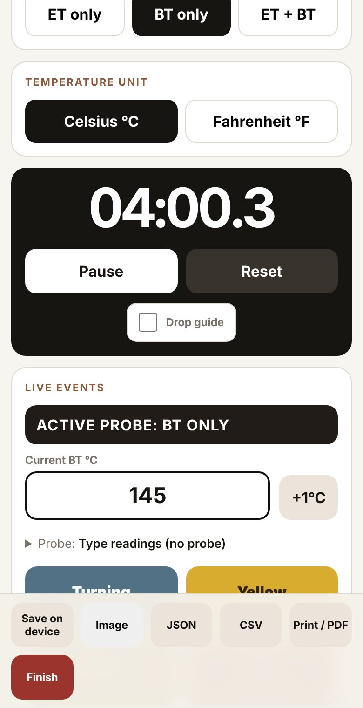
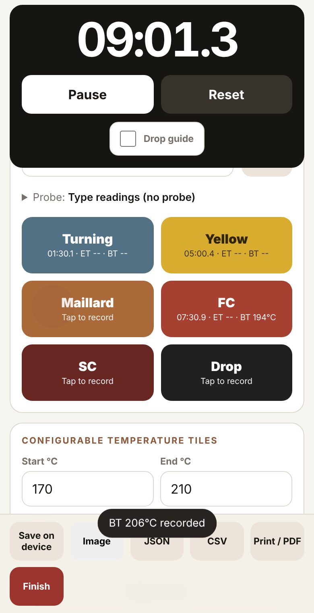
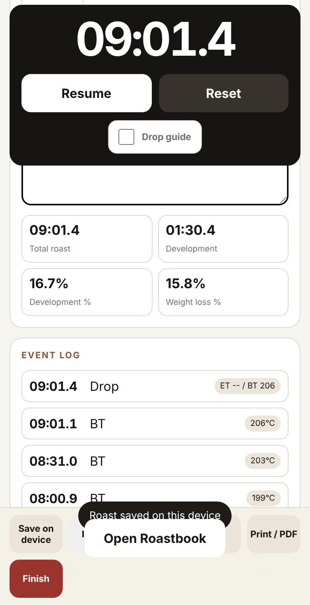
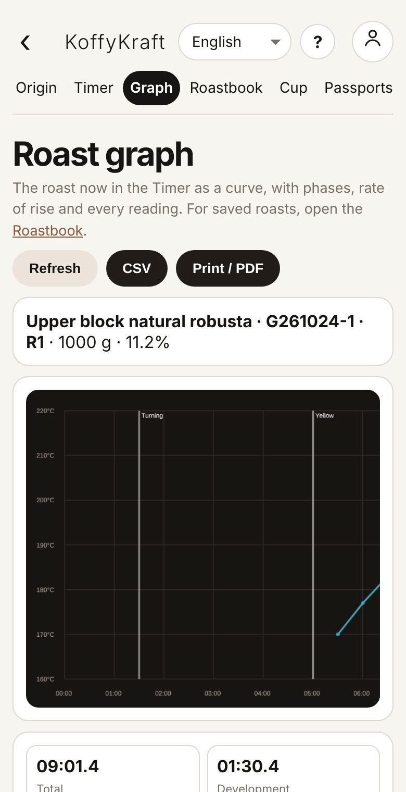
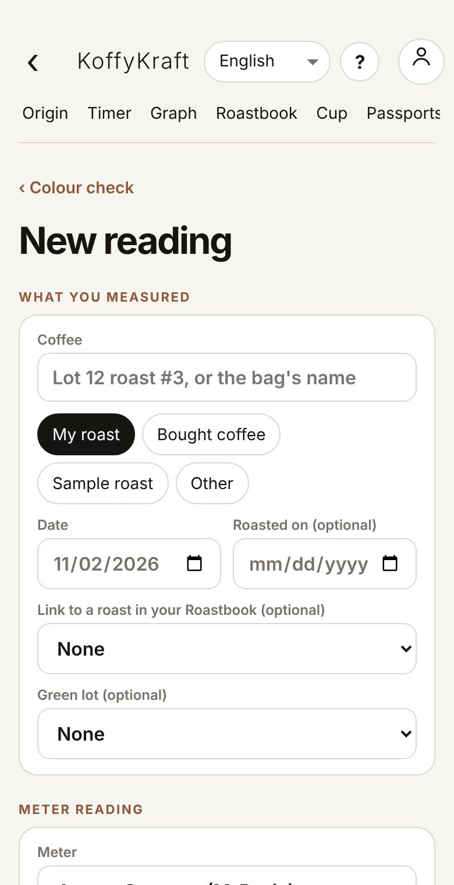

What it is
A roast that names its green lot carries the lot's chain with it: plot, harvest, run and lot. The lot's stock goes down by the green weight you roast, and the roast shows on the lot and on its passport.
Roast · Heat and time
Set up a roast from a green lot, time it, tap temperatures and events as they happen, then keep it in the Roastbook beside its graph and colour.
What it is
A roast that names its green lot carries the lot's chain with it: plot, harvest, run and lot. The lot's stock goes down by the green weight you roast, and the roast shows on the lot and on its passport.
Step 1 · Start a new roast
Open Roastbooks (from Home, under Roast and cup). New Roast sets up the coffee, then opens the timer. Timer opens it directly; Roastbook holds your finished roasts.

Also inFinding your way
Step 2 · Say which coffee I am roasting
In the timer, under Roaster and coffee identity, pick the Source green lot. The estate, coffee code and moisture fill in from the lot. Add the Roast number, the Green weight g, the Charge temperature °C and your Machine / roaster profile if you like.

Step 3 · Choose what I read
Choose what you read: ET only, BT only or ET + BT, and Celsius °C or Fahrenheit °F. ET is the exhaust or air temperature, BT the bean temperature.
Also inQuality as you go
Step 4 · Time the roast
Tap Start at charge. The clock runs at the top of the page and stays in view as you scroll. Pause and Reset are beside it.
Also inQuality as you go
Step 5 · Log temperatures as I roast
Below the events are the temperature tiles, one for each degree. When the thermometer reads a number, tap that tile: the reading is kept with the time. A held tap removes a reading. Set the range with Start °C, End °C and Interval °C, then Make tiles.

Also inQuality as you go
Step 6 · Mark turning point, first crack and drop
Tap each event as it happens: Turning, Yellow, Maillard, FC (first crack), SC (second crack) and Drop. Each keeps its time and the last temperature. Tap again to move it; hold to remove it.

Also inQuality as you go
Tip
Tick Drop guide for a guide to when to drop, worked out from the development time ratio (DTR).
What it is
Probe connects a thermometer instead of typing: USB, a TC4 or Artisan-style board, or a Bluetooth thermometer. It works in Chrome or Edge, not on iPhone.
Also inQuality as you go
Step 7 · Finish and keep the roast
Tap Finish. Under Result, type the Roasted weight g and the Final roast colour: total time, development, development % and weight loss work themselves out. Tap Save on device.

Watch out
A roast is kept in the Roastbook only after Save on device. The timer also keeps the roast in progress on the phone, so a page reload does not lose it.
Also inNothing gets lost
Step 8 · Find a past roast
Open Roastbook: every finished roast, newest first. Filter by estate, coffee, date or roast type. Open a roast to see its curve, phases and chain back to the green lot.

Also inFinding your way
Step 9 · Compare two roasts
In the Roastbook, tap Compare roasts to lay curves side by side.
Also inQuality as you go
Step 10 · Export my roasts
Export CSV gives a spreadsheet. A roast can also be downloaded for Artisan (.alog) or Artisan JSON / Cropster. Full backup (JSON) keeps every roast in one file.
Also inNothing gets lost
Step 11 · See the curve and rate of rise
Graph shows the roast now in the timer as a curve, with phases, rate of rise and every reading. CSV and Print / PDF save it.

Also inQuality as you go
Step 12 · Record roast colour
Open Colour and tap + New reading. Say what you measured (your roast, bought coffee, a sample), then type what your meter shows. With only a phone photo of ground coffee beside a white card, you get a ballpark roast level and Agtron, with how sure it is.

Tip
Type every number your meter's screen shows. For meters with no published scale (ColorTrack, Colorette, Neotec), the app learns from your own paired readings. Each reading is shown on the other scales too, and named on three roast charts.